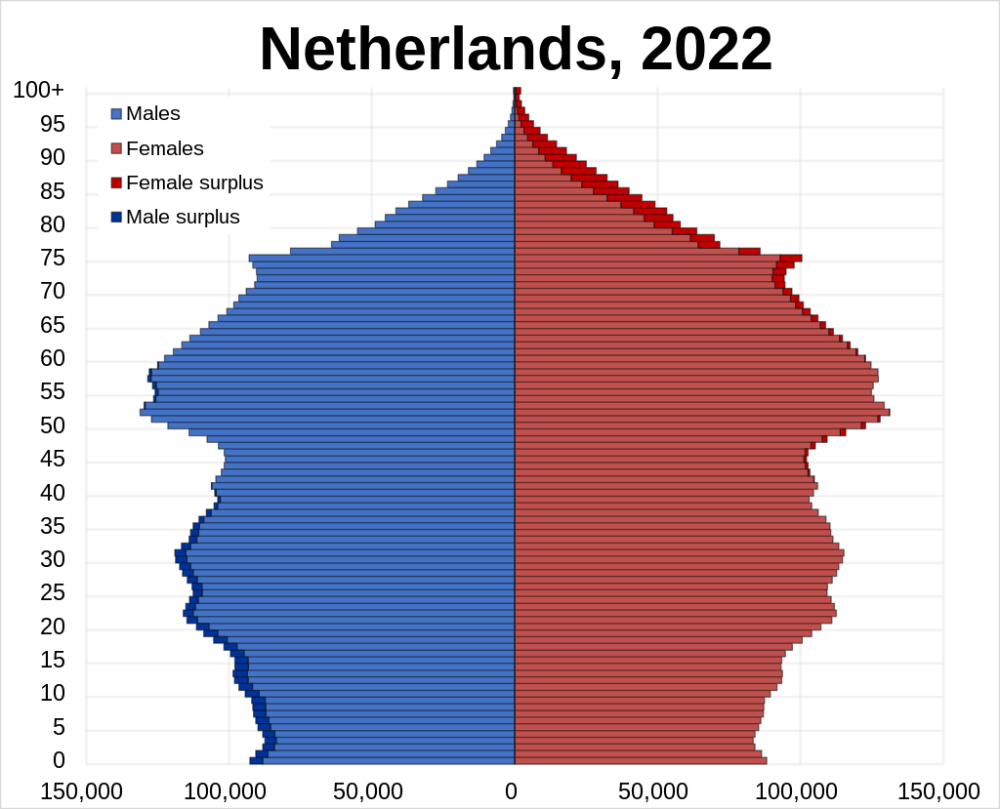

Navigation

Population
The Netherlands is the 67th most populated country in the
world, and as of March 21, 2016, it has a population of
17,000,000. As of December 31, 2020 the Netherlands has a
population of 17,474,677.[1]
Between 1900 and 1950 the population doubled from 5.1 to
10.2 million people. From 1951 to 2000 the population
increased from 10.0 to 15.9 million people, increasing by
a smaller proportion.[2]
Religion
In 2013, Statistics Netherlands found that 26% of the population identified as Roman Catholic, 16% as Protestant, 5% as Muslim, and 6% as "other" (the last includes other Christian denominations, Hindus 0.6%, Jews 0.1%, and Buddhists 0.4%). The agency interviewed 355,237 people in the period 2010–2013. [48] In 2019, the Central Bureau of Statistics reported that for the first time non-religious people were in the majority in the Netherlands. Only 49% of people older than 15 years reported to be religious; in 2012 that was still 54%. The largest religion was still Catholicism (24%), while 5% identified with Islam.[49]
Famous People
Anouk (singer) Left Image
Anouk Schemmekes[1][2] (née Teeuwe, Dutch: [aːˈnuk ˈsxɛməkəs ˈteːuʋə]; born 8 April 1975), professionally known by the mononym Anouk, is a Dutch singer and songwriter. After her 1997 breakthrough rock single Nobody's Wife, she had hit records in the Dutch and Belgian charts. Many of her albums topped the Dutch album charts; most of them going Platinum and several debuting in the number 1 position. Her most famous singles include: R U Kiddin' Me, Michel, Girl, Lost, Modern World, Three Days in a Row, Birds, and Woman.
Gerard Joling Right Image
Gerard Jan Joling (born 29 April 1960) is a Dutch singer and television presenter. Known for his high tenor voice, he rose to fame in the late 1980s and released a string of singles including "Ticket to the Tropics" and "Love Is in Your Eyes". He also achieved success in Asia[citation needed] and received more than 20 gold and platinum records.